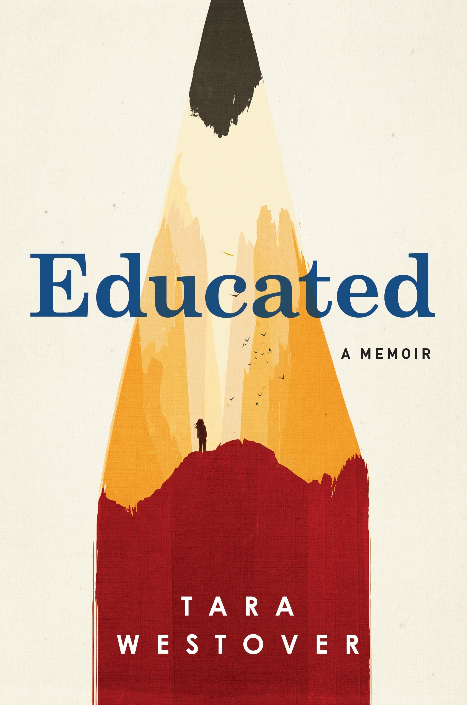
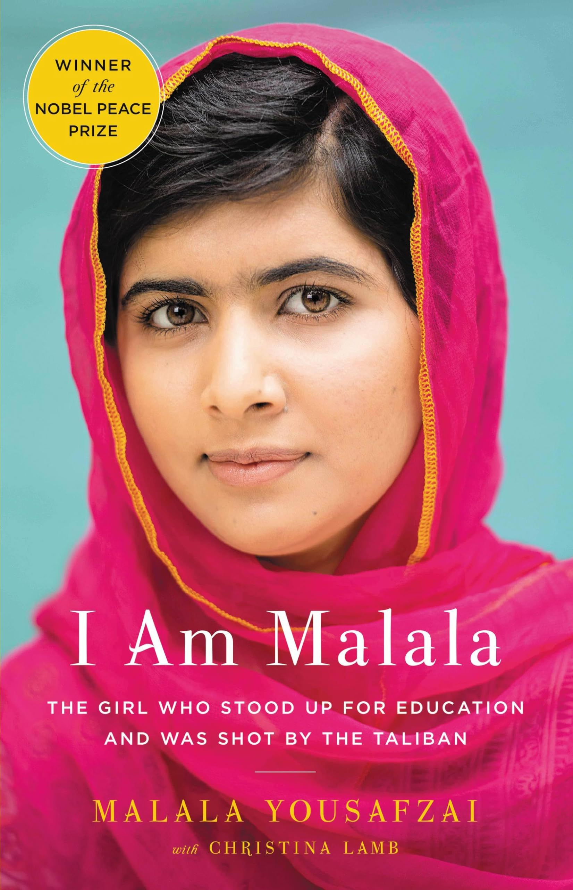
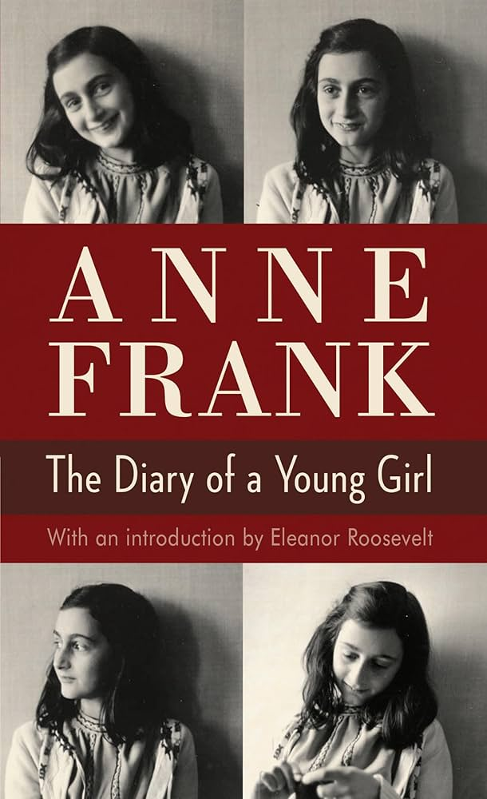
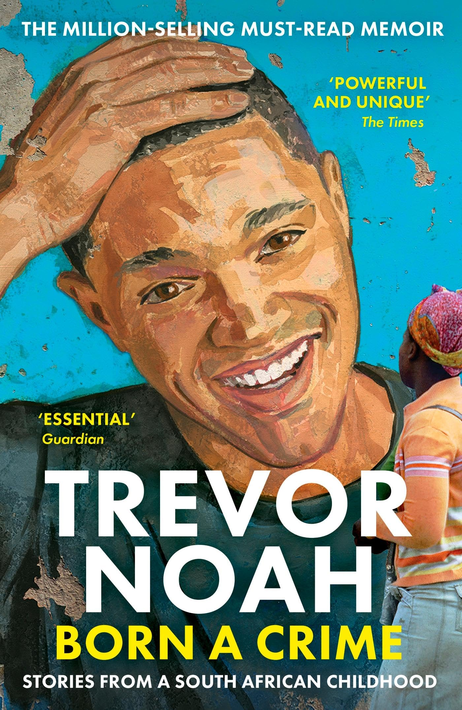
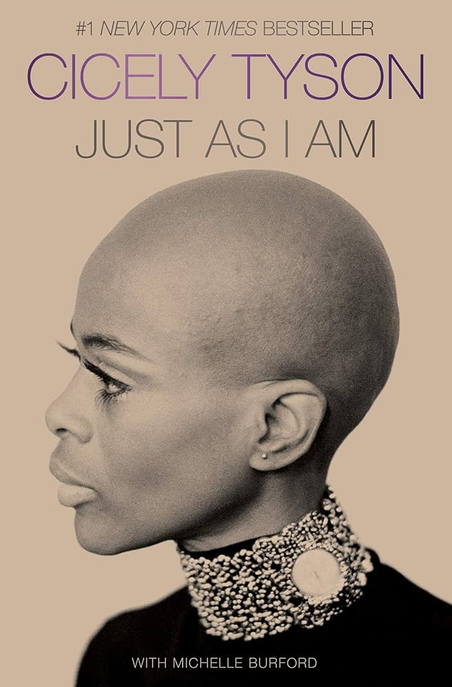

Becoming
Michelle Obama | 2018
L'histoire touchante de l'ancienne Première Dame des États-Unis, de son enfance à Chicago à ses années à la Maison Blanche. bonne chance!
Découvrez des histoires vraies, inspirantes et profondes racontées par ceux qui les ont vécues
L'histoire touchante de l'ancienne Première Dame des États-Unis, de son enfance à Chicago à ses années à la Maison Blanche. bonne chance!

Une biographie choquante d'une fille qui a grandi dans une famille stricte qui ne lui permettait pas d'étudier, et qui s'est ensuite inscrite à l'Université de Cambridge et a changé sa vie.

L'histoire d'une jeune Pakistanaise qui a défié les talibans pour défendre le droit des filles à l'éducation et a survécu à une tentative d'assassinat.

Tigana est l’histoire d’un pays détruit par un roi méchant, au point que personne ne peut même se souvenir de son nom. Des gens courageux décident de se battre pour faire revivre leur terre et rendre son nom, Tigana, au monde. C’est un livre plein de magie, de guerre et d’espoir.

L'acteur et comédien Trevor Noah raconte ce que c'était que d'être un enfant métis pendant l'apartheid en Afrique du Sud.

Les mémoires de la défunte star Cicely Tyson, une femme noire qui a ouvert les portes à toute une génération d'actrices à Hollywood.